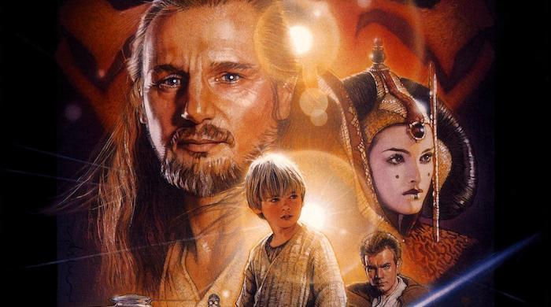

Episode I: The Phantom Menace

Two Jedi escape a hostile blockade to find allies and come across a young boy who may bring balance to the Force, but the long dormant Sith resurface to claim their original glory.
Storyline
The evil Trade Federation, led by Nute Gunray is planning to take over the peaceful world of Naboo. Jedi Knights Qui-Gon Jinn and Obi-Wan Kenobi are sent to confront the leaders. But not everything goes to plan. The two Jedi escape, and along with their new Gungan friend, Jar Jar Binks head to Naboo to warn Queen Amidala, but droids have already started to capture Naboo and the Queen is not safe there. Eventually, they land on Tatooine, where they become friends with a young boy known as Anakin Skywalker. Qui-Gon is curious about the boy, and sees a bright future for him. The group must now find a way of getting to Coruscant and to finally solve this trade dispute, but there is someone else hiding in the shadows. Are the Sith really extinct? Is the Queen really who she says she is? And what's so special about this young boy?Details
Duration: 2h 16minRelease Date: May 19, 1999 (United States)
Genre: Action · Adventure · Fantasy · Sci-fi
Director: George Lucas
Starring: Keira Knightley · Nathalie Portman · Liam Neeson